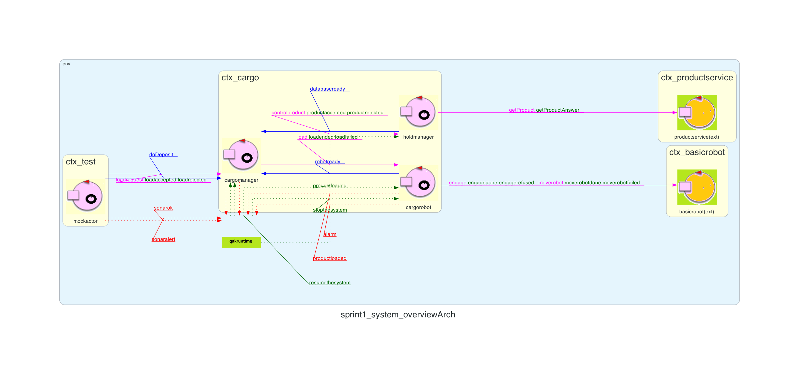

LABORATORIO DI INGEGNERIA DEI SISTEMI SOFTWARE - Sprint 2
Introduction
Nello Sprint precedente sono state analizzate le problematiche e progettato il sistema relativo al Core Business
del sistema cargoservice. L'output finale è stato una modellazione di alto livello del sistema e una
prima implementazione funzionante del core business (figura a destra).
L'obiettivo dello Sprint 2 è di analizzare le problematiche relative
al componente Sensor, sorte in fase di analisi dei requisiti
e realizzarne
un'implementazione funzionante integrandola con il corebusiness del sistema cargoservice,
da fornire al committente.
D'ora in avanti ci riferiremo al corebusiness del sistema chiamandolo
semplicemente cargoservice.

Requirements
I requisiti che intendiamo soddisfare in questo sprint sono i
seguenti:
Il sistema deve essere in grado di rilevare l'arrivo di un nuovo
prodotto tramite il sonar, distanza D < DFREE/2, durante un tempo ragionevole (ad es. 3 sec) e comunicarlo al
cargoservice.
Il sistema deve essere in grado di rilevare il malfunzionamento del
sonar, D>DFREE e comunicarlo al cargoservice.
Il sistema deve essere in grado accendere un led fisico in caso di
rilevamento di un malfunzionamento del sonar.
Il sistema deve essere in grado di riprendere il normale
funzionamento dopo la risoluzione del malfunzionamento del sonar, D<=DFREE.
Problem analysis
Come modellare Sensor e i suoi componenti?
Dall'analisi dei requisiti emerge la necessità di gestire